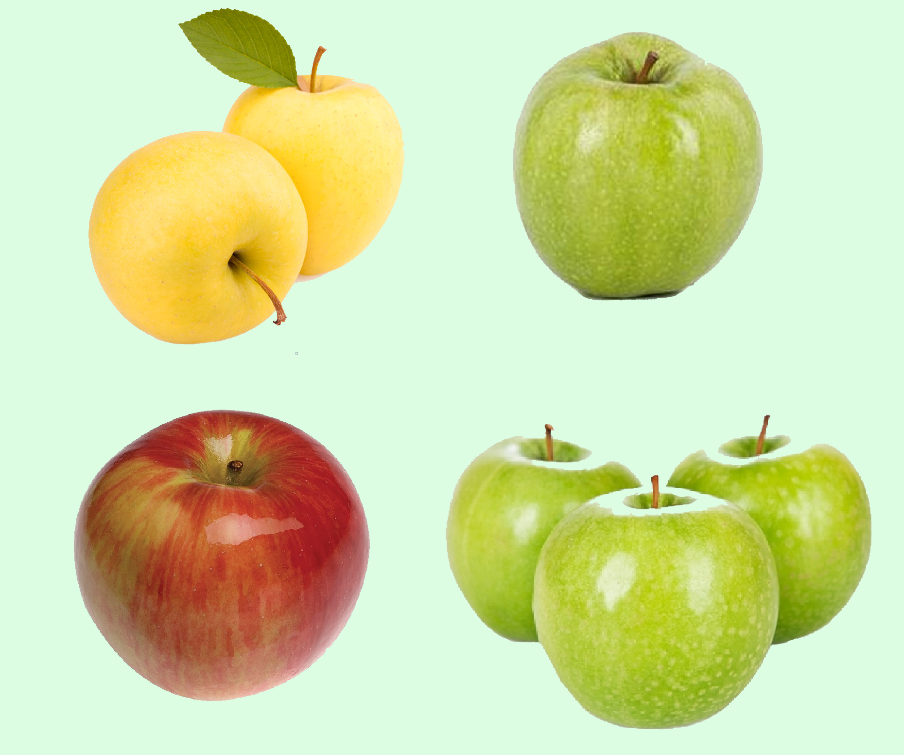

Яблуко
Що таке яблуко???
Яблуко — це їстивний плід яблуні, соковитий, багатий на вітаміни та мікроелементи. Фрукт вагою 70—200 грам, що вживається в їжу в свіжому, квашеному, печеному вигляді, є сировиною в кулінарії, у виробництві дитячого харчування, джемів, повидла, безалкогольних та алкогольних напоїв тощо.
Сорти яблук
За швидкістю визрівання сорти поділяються на:
- літні (Мелба (Лазурне), Білий налив, Донешта, Золота китайка, Московська грушовка)
- осінні (Алма, Жигулівське, Антонівка, Слава переможцям, Орловське смугасте, Апорт, Безсім'янка нова, Боровинка, Волзька красуня, Аніс алий)
- зимові (Богатир, Квітневе, Лобо, Пепін шафранний, Пам'ять Мічуріна, Голд, Беркутовське, Лісостепове, Россошанське смугасте, Ренет золотий Курський, Ренет Симиренка, Кортланд, Сінап північний, Амарілл, Антонівка звичайна, Аніс новий, Башкирській красень, Бабушкіно).
Найкрупніші вирощувачі яблук світу (2016)
| Країна |
Виробництво(млн. тонн) |
| Китай |
44.4 |
| США |
4.6 |
| Польща |
3.6 |
| Турція |
2.9 |
| Індія |
2.9 |
Найпопулярніші види яблук
